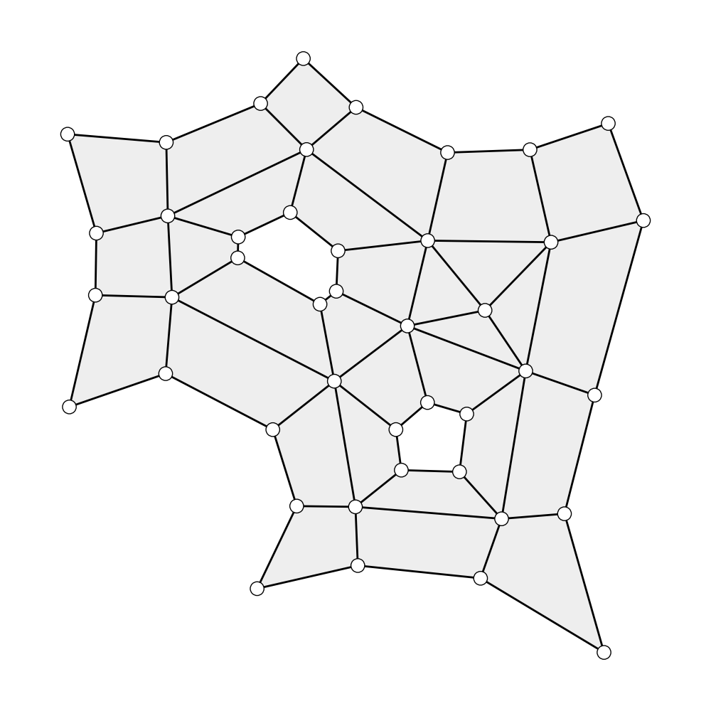
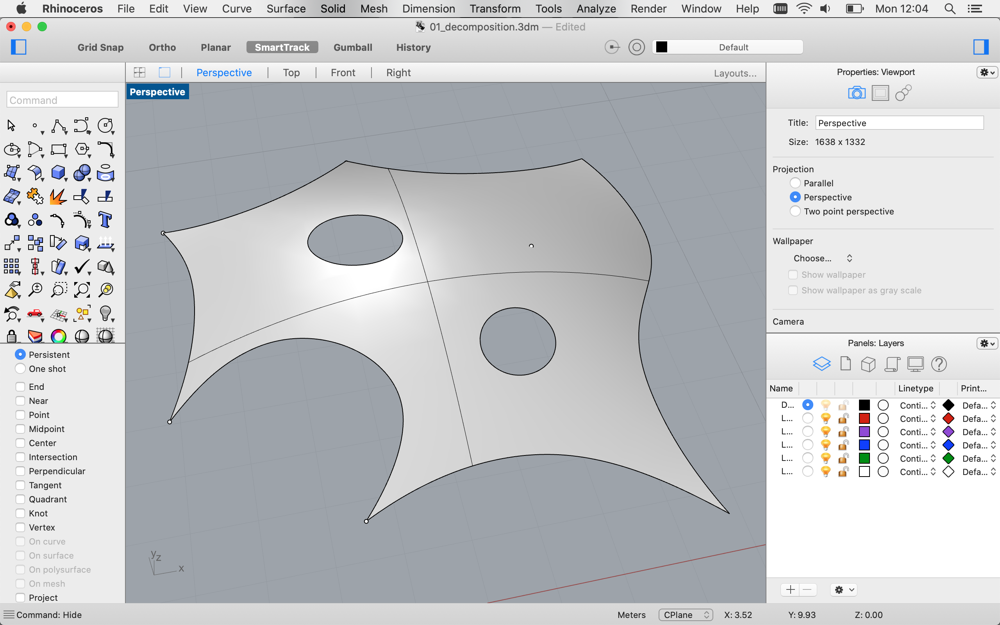
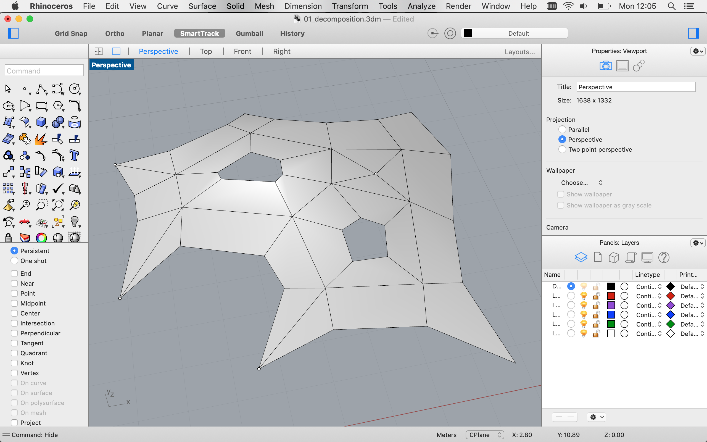

Skeleton-based decomposition
This example shows how to decompose a surface into a coarse quad mesh using its topological skeleton.
The algorithm stems from this paper: Feature-based topology finding of patterns for shell structures by Robin Oval, Matthias Rippmann, Romain Mesnil, Tom Van Mele, Olivier Baverel, Philippe Block
@article{oval2019feature,
title={Feature-based topology finding of patterns for shell structures},
author={Oval, Robin and Rippmann, Matthias and Mesnil, Romain and Van Mele, Tom and Baverel, Olivier and Block, Philippe},
journal={Automation in Construction},
volume={103},
pages={185--201},
year={2019},
publisher={Elsevier}
}
From planar discrete polylines

Skeleton-based decomposition of a set of planar discrete polylines.
import json
from compas_singular.algorithms import boundary_triangulation
from compas_singular.algorithms import SkeletonDecomposition
from compas_plotters.meshplotter import MeshPlotter
# read input data
filepath = 'data/01_decomposition.json'
with open(filepath, 'r') as fp:
data = json.load(fp)
# get outer boundary polyline, inner boundary polylines, polyline features and point features
outer_boundary, inner_boundaries, polyline_features, point_features = data
# Delaunay triangulation of the surface formed by the planar polylines using the points as Delaunay vertices
mesh = boundary_triangulation(outer_boundary, inner_boundaries, polyline_features, point_features, src='numpy')
# start instance for skeleton-based decomposition
decomposition = SkeletonDecomposition.from_mesh(mesh)
# # build decomposition mesh
mesh = decomposition.decomposition_mesh(point_features)
# plot decomposition mesh
plotter = MeshPlotter(mesh, figsize=(5, 5))
plotter.draw_edges()
plotter.draw_vertices()
plotter.draw_faces()
plotter.show()
From curved continuous objects (in Rhino)

Input surface with features in Rhino.

Skeleton-based decomposition of the curved surface with features.
try:
import rhinoscriptsyntax as rs
except ImportError:
import compas
compas.raise_if_ironpython()
from compas_singular.algorithms import surface_discrete_mapping
from compas_singular.algorithms import boundary_triangulation
from compas_singular.algorithms import SkeletonDecomposition
from compas_singular.rhino.objects.surface import RhinoSurface
from compas_rhino.artists import MeshArtist
# draw your own surfaces, curves and points or get them from examples/data/01_decomposition.3dm
# get input data
srf_guid = rs.GetObject('Rhino surface to decompose', filter=8) or []
crv_guids = rs.GetObjects('Rhino curves to integrate', filter=4) or []
pt_guids = rs.GetObjects('Rhino points to integrate', filter=1) or []
discretisation = rs.GetReal('Value for precision - between 1 and 5 percent of scale', number=1, minimum=0)
# get outer boundary polyline, inner boundary polylines, polyline features and point features by mapping curved surface to plan and discretising its boundaries and features
outer_boundary, inner_boundaries, polyline_features, point_features = surface_discrete_mapping(srf_guid, discretisation, crv_guids = crv_guids, pt_guids = pt_guids)
# Delaunay triangulation of the surface formed by the planar polylines using the points as Delaunay vertices
mesh = boundary_triangulation(outer_boundary, inner_boundaries, polyline_features, point_features)
# start instance for skeleton-based decomposition
decomposition = SkeletonDecomposition.from_mesh(mesh)
# build decomposition mesh
mesh = decomposition.decomposition_mesh(point_features)
# remap mesh on surface
RhinoSurface.from_guid(srf_guid).mesh_uv_to_xyz(mesh)
# draw decomposition mesh
MeshArtist(mesh).draw_mesh()